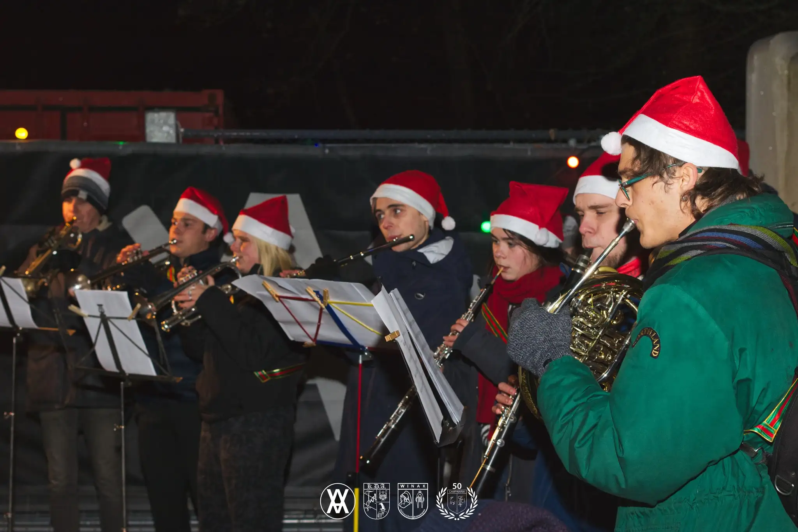

Speel je een houtblazer, koperblazer of slagwerk? Kom dan naar onze repetitie en maak nieuwe vrienden voor het leven tijdens het spelen van muziek!
KLAANK is de nieuwe Antwerpse studentenfanfare in Wilrijk. We repeteren elke woensdag om half acht op campus Groenenborger in lokaal T.138 (kaartje). Kom gerust eens langs.
